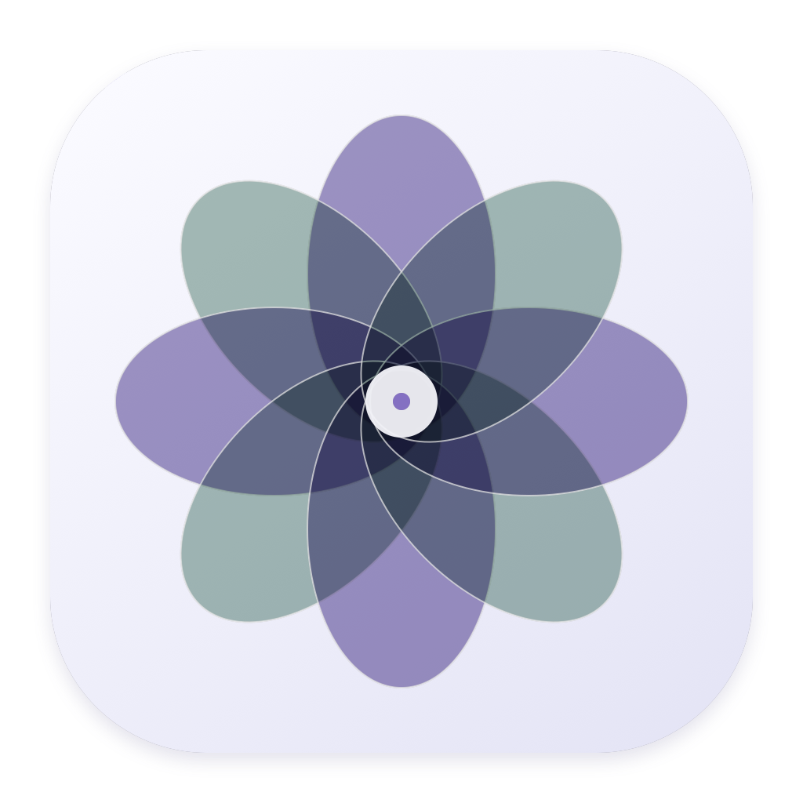
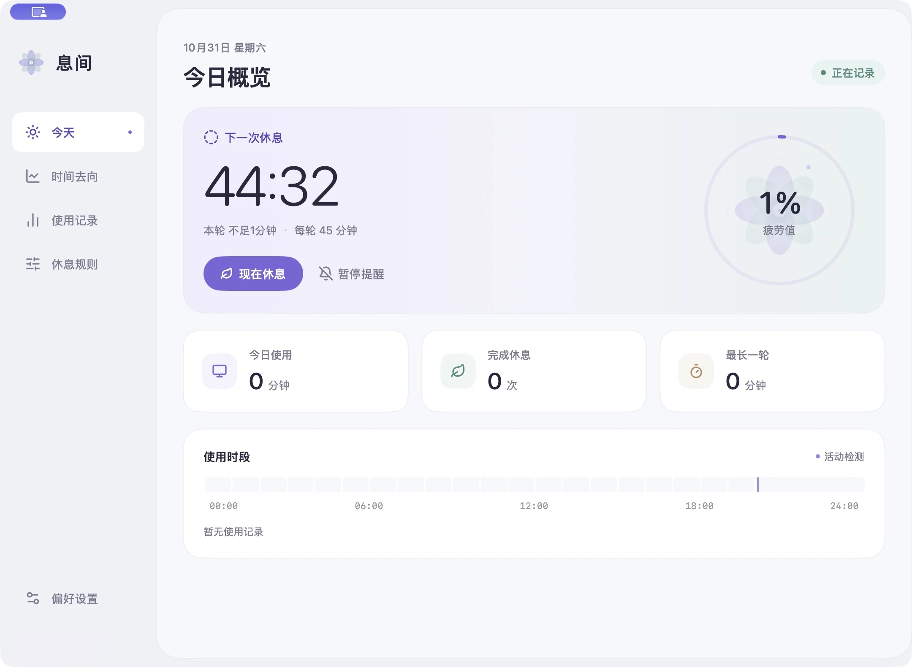
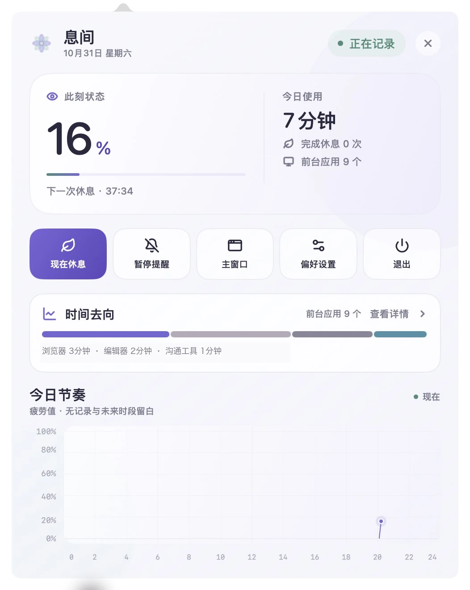

从活动判断
锁屏、息屏和休眠时停止累计。

息间 STILLmacOS · 免费开源
息间在你投入工作时安静记录，在需要离开屏幕时轻轻出现。 没有账号，没有订阅，使用数据留在这台 Mac。

锁屏、息屏和休眠时停止累计。
短暂停顿不会立刻打断这一轮。
不需要账号，不上传使用记录。
看见节奏
疲劳值来自使用与休息节奏的估算，不是医学检测。没有记录的时间与未来时段留空，避免把空白误画成忙碌。
菜单栏入口
菜单栏只留图标与疲劳百分比。展开后可以查看下一轮休息、今日使用、时间去向，也能暂停提醒或打开主窗口。

休息提醒
从安静横幅到全屏休息，按你希望被打断的程度选择。提醒打开即开始计时，主动关闭则稍后再来。
REST INTERVAL
打开窗口立即倒计时。选择课程后进入跟练，倒计时暂停；不跟练时，到点自动收起。
休息课程
输入网页地址或视频直链，自动识别标题、封面与媒体地址。首次在线播放，同时缓存到本机。
示例课程：Bilibili「5 个动作改善头前倾和含胸驼背」
课程内容由你添加，也可补充动作与准备事项。页面中的视频、封面与商标归原作者及平台所有，不属于息间安装包。
坐姿关照
以你校准时的自然坐姿为参照，观察头部侧倾、俯仰、肩线与头肩比例。连续偏离一段时间才提醒，短暂转头、前后移动或识别丢失不会立刻打断你。
正面镜头不能可靠测量标准头前倾角度，也不能判断颈椎曲度、驼背或腰椎状态。提醒用于改变姿势，不替代医学评估。
本地优先
使用统计、应用停留时段、课程与设置保存在本机。前台活动判断不读取窗口标题、网页地址、截图或输入内容；坐姿摄像头只在本机分析，不录像。
当前安装包为 ad-hoc 签名，尚未经过 Apple Developer ID 签名与公证。若 macOS 首次拦截，请右键应用并选择“打开”。